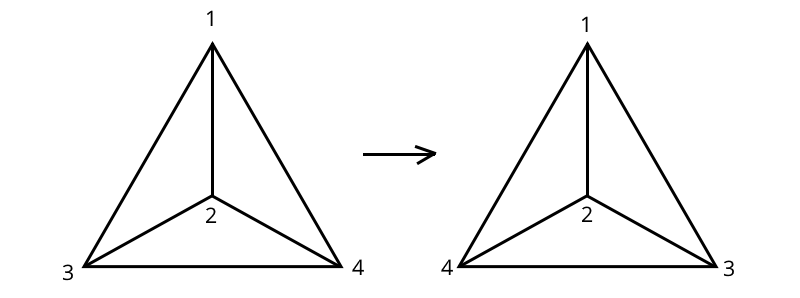
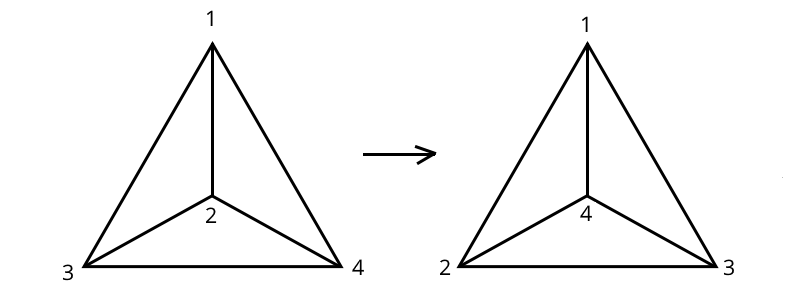
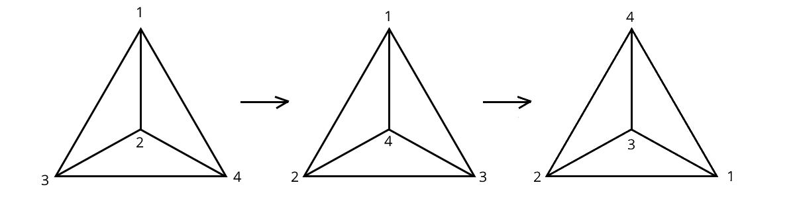
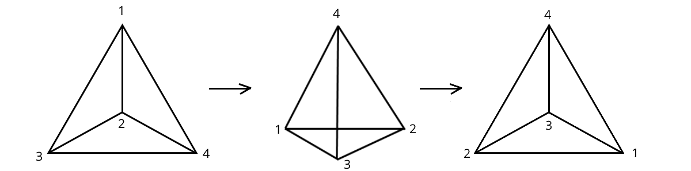

Visualising the tetrahedral symmetry group
Table of Contents
The aim of the post is to give a geometric interpretation of the tetrahedral symmetry group \(T\) as well as some of its properties. Credits to my good friend Ash for the awesome graphics.
We shall label the vertices of a tetrahedron \(1\) to \(4\) (one could label the faces instead, but it doesn't make a difference because of duality).
Construction via permutations
Since every tetrahedral symmetry can be uniquely identified as a permutation of these \(4\) points, it follows that \(T\) is a subgroup of \(S_4\). We shall determine \(T\) by studying the cycle types of these symmetries.
Recall that the non-trivial cycle types of \(S_4\) are \((2)\), \((3)\), \((2,2)\) and \((4)\).
\((2)\)
This corresponds to the action of swapping two vertices while leaving the other two unchanged. It clearly does not preserve orientation, and hence does not correspond to any tetrahedral symmetry.

Figure 1: Visualisation of the permutation \((12)\)
\((3)\)
Let \(\pi = (abc)\) be a $3$-cycle, and let \(d\) be the remaining vertex. Then \(\pi\) corresponds to the action of rotation about \(d\)1:

Figure 2: Visualisation of the permutation \((243)\), which is a rotation about \(1\)
\((2,2)\)
Note that any $(2,2)$-cycle is the product of $3$-cycles: \((ab)(cd) = (acb)(acd)\). So it corresponds to the action of two successive rotations about different vertices.

Figure 3: Visualisation of the permutation \((243)(143)\), which is a rotation about \(1\) followed by a rotation about \(2\)
\((4)\)
Any $4$-cycle is the product of a $3$-cycle and $2$-cycle: \((abcd) = (abc)(cd)\). Hence it does not correspond to any tetraheral symmetry, otherwise \((cd) = (acb)(abcd)\) would be a tetrahdral symmetry.
In summary, nontrivial tetrahdral symmetries have cycle types \((3)\) and \((2,2)\), which make up all the even permutations. Thus \(T \cong A_4\).
Construction via semidirect product
Alternatively, one can view \(T\) as a combination of two types of actions (see this for a detailed explanation). The first is the action of \(C_3\) by rotation about a fixed vertex which we shall call the apex.
The second can be thought of as the action which "changes the apex": imagine the tetrahedron lying on a flat plane, and let the top vertex be the apex (this justifies my using that word). Choose any non-apex vertex \(v\), and tip the tetrahedron over such that \(v\) is now the base. Then, rotate \(v\) clockwise by \(2\pi/3\) radians, such that the alignment of the tetrahedron (when viewed from a fixed direction) matches the original:

Figure 4: Visualisation of the permutation \((14)(23)\), obtained by tipping \(1\) over towards North-west, then rotating the base
By labelling the faces of tetrahedron, it can be seen that the second type of action corresponds to $(2,2)$-cycles, so it is acted on by the Klein four-group \(V_4\). Notice that this matches the above description of $(2,2)$-cycles as two successive rotations about different vertices.
It should be intuitively clear that any tetrahedral symmetry can be expressed as a combination of a rotation and a apex-change. Thus \(T\) is a semidirect product \(V_4 \rtimes C_3\). It is not \(C_3 \rtimes V_4\) because as I show later on, \(C_3\) is not normal in \(A_4\).
Conjugacy classes
We know that the $(2,2)$-cycles (corresponding to two successive rotations about different faces) form one conjugacy class in \(A_4\), while the $3$-cycles form two (see here for more details).
For example, \((123)\) and \((132)\) are not conjugate to each other in \(A_4\). One is a clockwise \(2\pi/3\) rotation about vertex \(4\), while the other is a counterclockwise \(2\pi/3\) rotation. This is true in general: so the clockwise and counterclockwise \(2\pi/3\) rotations form distinct conjugacy classes.
Normal subgroups
The sizes of the conjugacy classes of \(A_4\) are \(1\), \(3\) and \(8\). Using the fact that a normal subgroup is a union of conjugacy classes, we can conclude that any proper nontrivial normal subgroup has order \(4 = 1+3\). The only such subgroup is \(\angles{(12)(34), (13)(24)}\), which is isomorphic to \(V_4\).
The subgroup \(H = \angles{(123)}\) (and its conjugates) is not normal because as mentioned above, \((123)\) and \((132)\) belong to different conjugacy classes, and \(H\) does not contain both classes.
Footnotes:
Embed the tetrahedron in \(\R^3\) such that the center is at the origin, and let \(W\) be the $2$-dimensional subspace parallel to the face opposite \(d\). Then \(\pi\) can be identified as the linear operator which rotates \(W\) clockwise by either \(2\pi/3\) or \(4\pi/3\) radians.